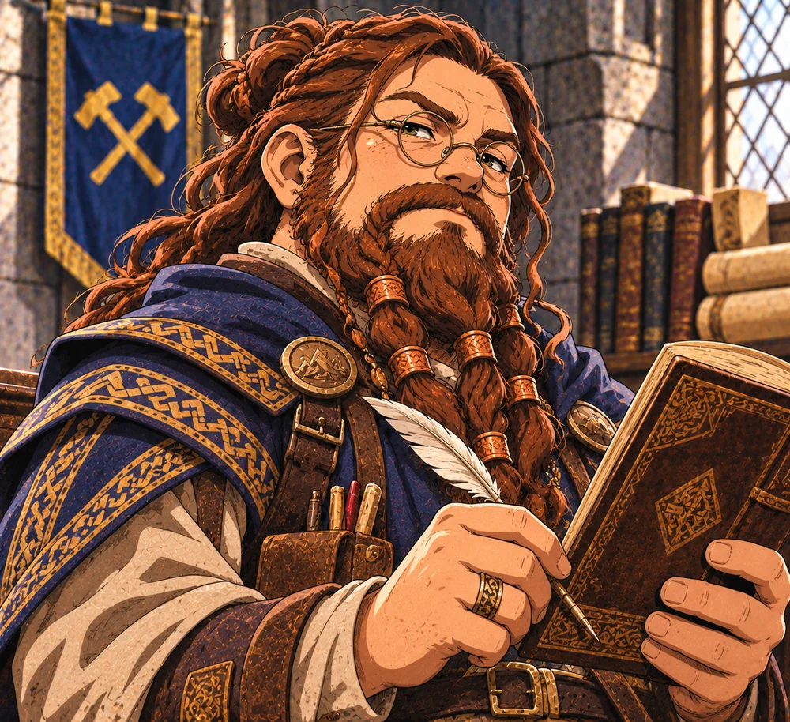
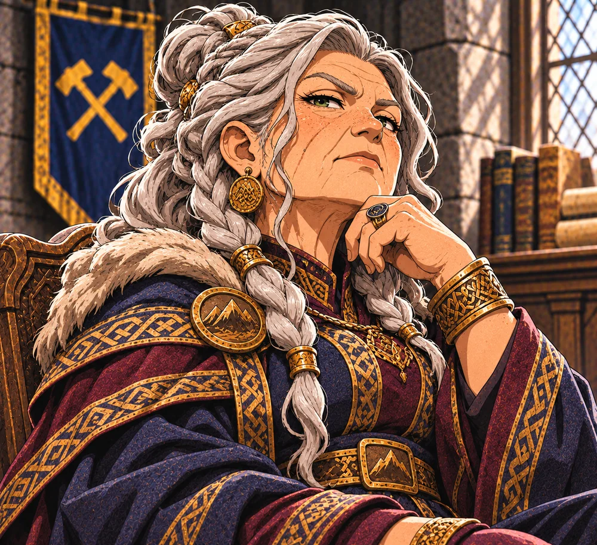
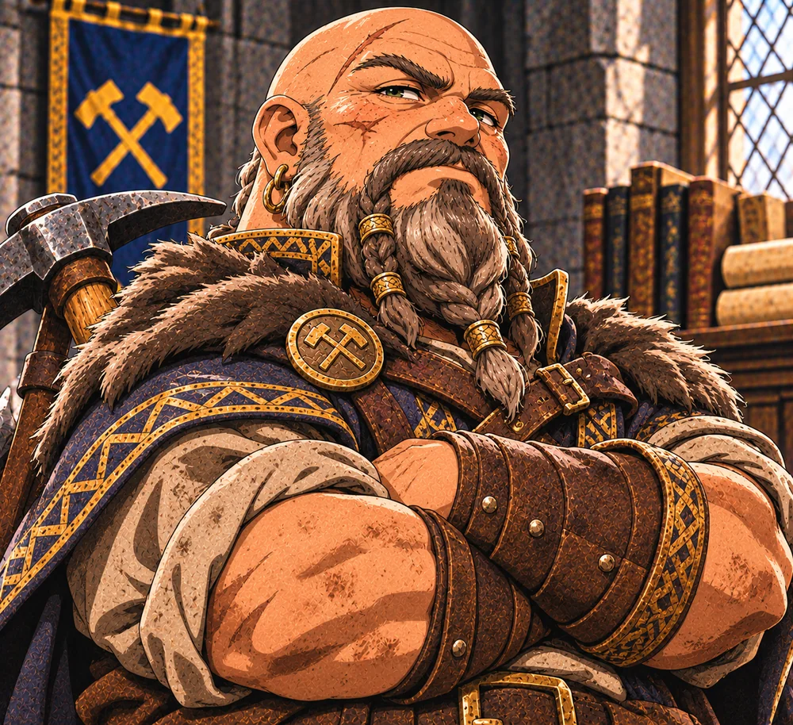
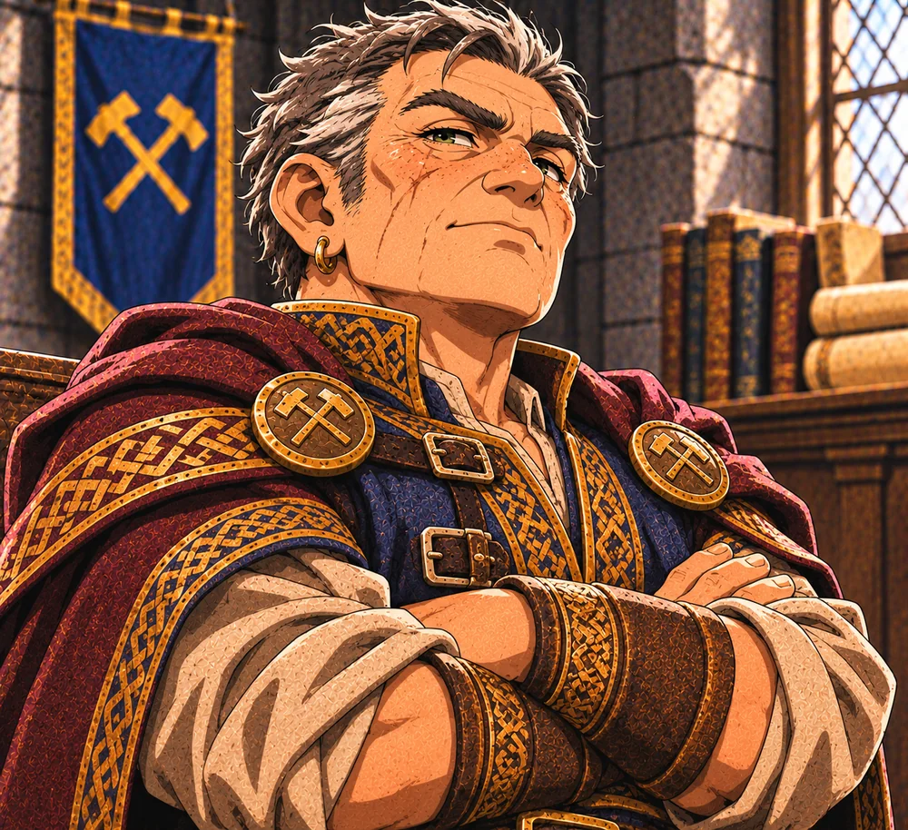
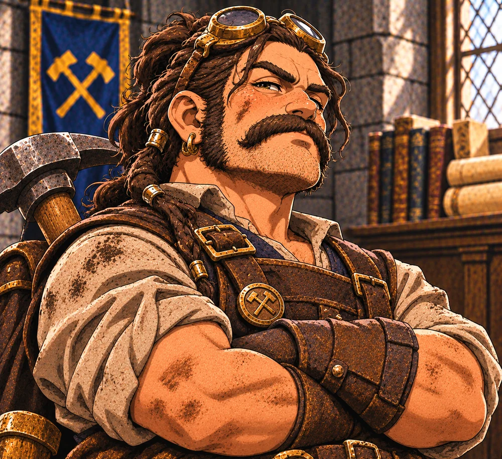
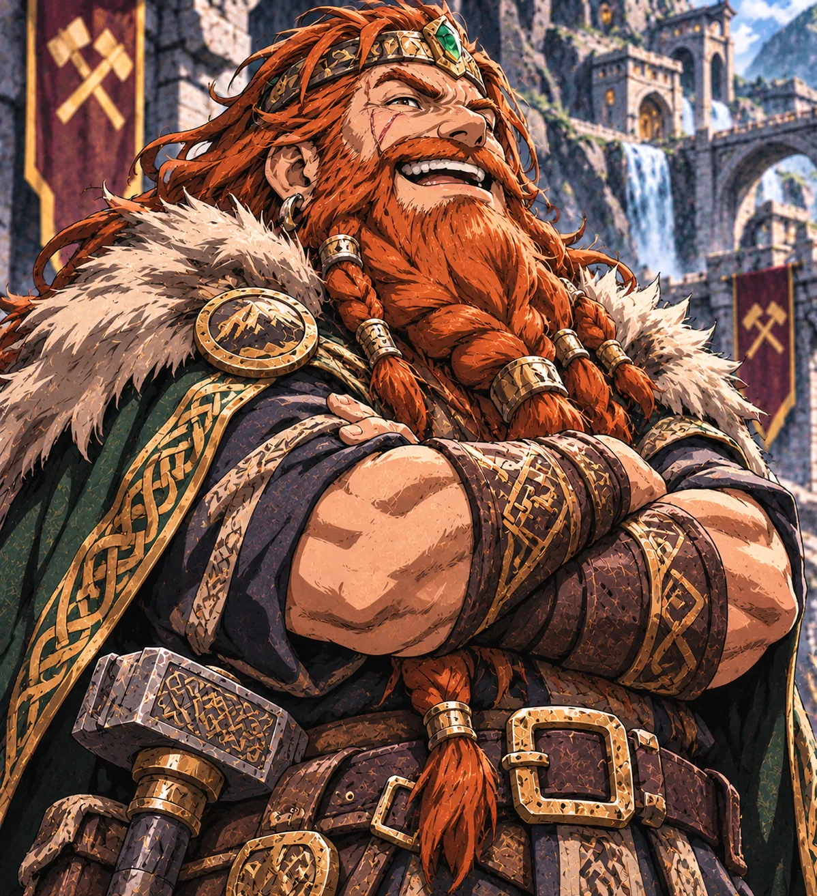
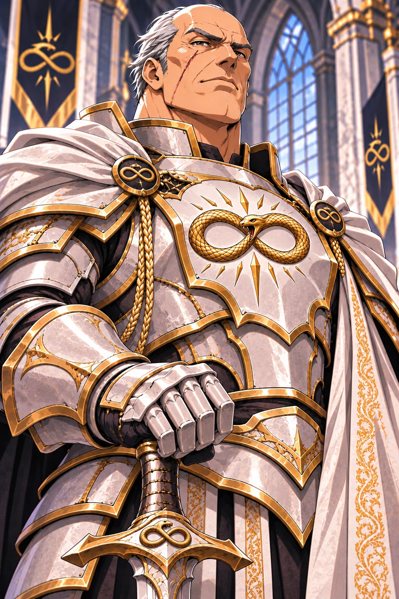
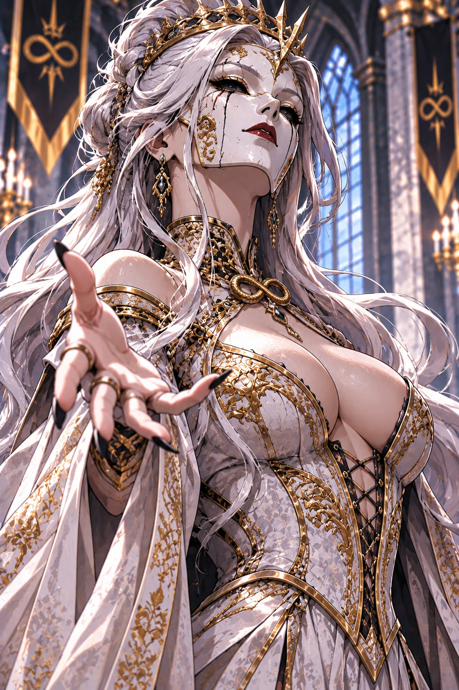
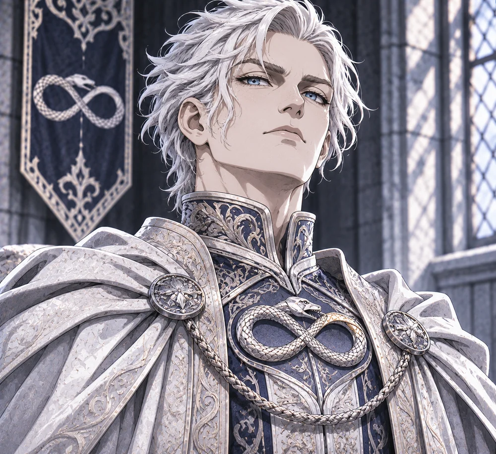

Gruppo 1 · Avventura 17 · Ciclo del principe
La memoria che non doveva esistere
Seconda Parte · Gruppo 1 · Bozza 0.1 · Horgon, Cima di Rocca
Concetto
Il ritrovamento di un antico murale mette re Flick Greenstone e il Consiglio degli Anziani davanti a un dilemma sulla Memoria e sulle origini dei Nani. La vita a Horgon prosegue normalmente: la questione è riservata alle autorità, che chiedono a Yatandra un mediatore della casa reale. Non attribuire senza prove il ritrovamento agli Eterni.
Aggancio — la richiesta di Horgon
Dopo l'avventura 16 a Pontequieto, un messaggero della Corona raggiunge il gruppo. Horgon ha inviato una richiesta formale: occorre un mediatore reale straniero per una delicata questione storica e istituzionale, nota soltanto al re e al Consiglio degli Anziani. La regina Liselle Silverhawk, insospettita dalle circostanze e dalle precedenti vicende degli Eterni, sceglie Ryan Stormblade e gli affida la missione insieme ai PG e a Tobia Varo. Il sospetto di Liselle non costituisce una prova del coinvolgimento degli Eterni.
«Al principe Ryan Stormblade, per disposizione di Sua Maestà la regina Liselle. È pervenuta alla Corona una richiesta ufficiale dal regno di Horgon. Le autorità naniche chiedono l'intervento di un mediatore della casa reale di Yatandra: una scoperta storica pone il re e il Consiglio degli Anziani davanti a una decisione delicata. Sua Maestà vi affida questo incarico, insieme ai vostri compagni. Vi attendono a Cima di Rocca.»
Nota personale di Liselle a Ryan (riservata): «Non so se gli Eterni abbiano qualcosa a che fare con questa faccenda. Ma preferisco che a occuparsene qualcuno che conosce il pericolo. Fidati dei tuoi compagni. Ricorda che rappresenti Yatandra.»
Il ruolo di Ryan
Ryan è investito di un incarico ufficiale che non ha cercato. La sua reazione può mescolare ironia e disagio: voleva mettersi alla prova lontano dall'ombra dei genitori, ma deve rappresentare la Corona. Questo NON è il momento in cui sceglie spontaneamente di usare il titolo per ottenere udienza: quella svolta rimane riservata all'avventura 21 nella Foresta Nera, quando assumerà una responsabilità storica accompagnando Toreng a Yatandra. Qui il titolo è parte di un mandato affidatogli dalla madre.
Vincoli di canone — società nanica
- La Memoria è il valore centrale di Horgon: iscrizioni su edifici e pozzo centrale raccontano gli eventi; le testimonianze hanno pari dignità.
- I clan sono corporazioni professionali, non casate ereditarie; tutti i mestieri hanno uguale dignità.
- La parola data è sacra: tradire una promessa esplicita comporta disonore ed esclusione definitiva.
- La distruzione deliberata di una testimonianza storica è un crimine capitale se non compensata da memoria sconosciuta di pari importanza; giudica il re Flick Greenstone.
- I Nani non sono incapaci di mentire, ma furto e ricatto sistematico sono una premessa poco rappresentativa di Horgon.
- Il re Flick è giusto e rispettato; il Consiglio degli Anziani elegge il sovrano, ma non lo destituisce.
- La crisi deve derivare plausibilmente da norme, memoria, vocazioni e impegni nanici, non da una generica corruzione urbana noren.
La scoperta e il dilemma
Solo re Flick Greenstone e il Consiglio degli Anziani conoscono il ritrovamento. Non c'è alcun blocco sociale: la vita a Horgon prosegue normalmente. Un antico murale afferma che Sabella condusse i primi Nani su Ellan da un altro mondo, contraddicendo il mito della loro origine dalla pietra. Il dilemma è accertare ciò che è reale e giusto e decidere che cosa comunicare al popolo; cancellare la testimonianza è impensabile.
Le profondità
La galleria del ritrovamento è raggiungibile attraversando caverne abitate da mostri sotterranei: prevedere un combattimento. Il murale era più ampio, ma un crollo ne ha distrutto irreparabilmente una parte. Si legge ancora: «Come noi anche gli Elfi vennero pre…». Nessuna ricostruzione del testo mancante è possibile.
Nota riservata al Master — Thedas e lyrium
La galleria è il luogo in cui Sabella portò i primi Nani da Thedas su Ellan. Su un'altra parete affiorano cristalli di lyrium, sconosciuti agli abitanti di Ellan. Un eventuale Nano avverte una familiarità profonda e inspiegabile, pur non avendoli mai visti. Il lyrium conserva le proprietà e i pericoli propri di Dragon Age; non rivelarne il nome ai giocatori.
Riferimento visivo per il Master: Immagine dei cristalli di lyrium — Dragon Age: Inquisition. Fonte: Dragon Age Wiki; immagine di riferimento, non materiale originale di Ellan.
Personaggi nanici — Interazioni
Nota di canone: le Nane non hanno la barba; non tutti i Nani maschi la portano. Barba, baffi o rasatura non indicano rango, anzianità o clan. I clan sono professionali. Questi PNG rispettano la Memoria e cercano sinceramente ciò che è vero e giusto, pur avendo opinioni diverse.
Dhorin Pietrascritta — Scriba accompagnatore
64 anni · Clan degli Scribi. Accompagna i PG nelle profondità e documenta ogni scoperta. Ha una barba castana intrecciata con sottili fili di rame, tavolette, strumenti da rilievo e un quaderno. Preciso e curioso, non tollera le citazioni approssimative. Conosce le gallerie, ma non è un grande combattente. Davanti al murale protegge le iscrizioni superstiti prima di pensare a sé stesso.
«Non scriverò ciò che pensiamo abbia detto. Scriverò ciò che dice.»
Balgra Ferromemoria — La voce della prudenza
139 anni · Clan degli Scribi · Consiglio degli Anziani. Nana dai lunghi capelli grigio argento raccolti in una treccia elaborata, volto segnato dall'età e sguardo severo e intelligente; non ha la barba. Conosce gran parte delle cronache di Horgon. Non nega né vuole occultare l'iscrizione, ma ritiene che una testimonianza incompleta debba essere verificata prima di dichiarare inesatta una tradizione millenaria.
«Come distinguete una memoria autentica da una memoria che racconta un errore?»
Ordek Rocciasalda — Il custode della responsabilità
126 anni · Clan dei Minatori · Consiglio degli Anziani. Massiccio, con una mano segnata da un antico incidente in miniera. Pratico e poco incline alle speculazioni, sostiene che il popolo debba conoscere il ritrovamento, anche se il suo significato rimane incerto. La riservatezza temporanea lo mette a disagio. Rispetta la competenza di Balgra e non la considera un'avversaria.
Theryn Martellochiaro — La voce del futuro
117 anni · Clan degli Artigiani · Consiglio degli Anziani. Ha dedicato la vita a strumenti di precisione e opere durevoli. È affascinato dall'idea che la storia dei Nani sia più vasta di quanto credessero. Vorrebbe nuove ricerche prima di formulare conclusioni ufficiali; ascolta con particolare interesse ciò che i PG sanno di Sabella.
Grumek Pietrafonda — Il testimone del ritrovamento
78 anni · Clan dei Minatori. Caposquadra che ha scoperto la galleria. Non è nel Consiglio; rispetta la riservatezza chiesta dal re finché non sarà presa una decisione. Conosce i pericoli delle profondità e aiuta i PG a prepararsi. Orgoglioso della scoperta, non pretende di comprenderne il significato.
Re Flick Greenstone — La responsabilità della Corona
Re giusto e rispettato di Horgon, già definito nel canone. Ha richiesto la mediazione di Yatandra: ascolta Anziani, Ryan e PG, ma non delega loro la decisione finale su come trattare e comunicare la testimonianza. Scheda originale di Flick Greenstone — Gazzettino dei Personaggi.
Uso al tavolo: Dhorin accompagna e registra, Grumek guida nelle gallerie, i tre Anziani offrono prospettive diverse, Flick decide dopo aver ascoltato. Nessuno deve sottrarre ai PG l'iniziativa nell'esplorazione e nell'indagine.
Struttura da sviluppare
- Arrivo del messaggio e incarico a Ryan.
- Viaggio e ingresso a Cima di Rocca; ricevimento della delegazione.
- Colloquio riservato con Flick e gli Anziani sul dilemma della Memoria.
- Indagine, esplorazione e scelte dei PG; indizi verificabili, non soluzione imposta.
- Restituzione delle scoperte a Flick e agli Anziani e decisione su cosa comunicare.
- Prosecuzione verso Hotland.
Ryan e Tobia
Ryan impara a rappresentare la Corona senza ridurre la mediazione a un ordine. Tobia può osservare come una società affronta i doveri e le tradizioni, senza sostituirsi agli studiosi nanici. Nessuno dei due deve risolvere l'avventura al posto dei PG. I loro archi restano graduali.
Nota di progettazione
La precedente idea «Il riflesso del colpevole» (specchi, false testimonianze, sorveglianza e ricatti) è accantonata per Horgon e destinata come possibile base per l'avventura 19 a Ponteverde, in Hotland; non è ancora una trama definitiva.
Scena dopo i titoli di coda — Il consiglio dei tre
Da leggere ai giocatori
Una sala silenziosa, immersa in una luce pallida. I tre capi degli Eterni siedono attorno a un tavolo: la Torre Bianca, la Regina Bianca e il Re Bianco.
È la Torre Bianca a rompere il silenzio.
«Tutto ciò che vediamo, tutto ciò che ci riferiscono i nostri agenti, ci porta alla stessa conclusione: si sta risvegliando.»
La Regina Bianca ascolta senza tradire alcuna emozione. Poi risponde, con voce fredda e misurata.
«Ci siamo preparati per questo momento. La raccolta dei dischi è terminata. Possiamo procedere con il piano.»
Il Re Bianco solleva lentamente una mano.
«Facciamo una cosa alla volta. Prima occupiamoci dei Sisil... Di nuovo. Poi ci occuperemo di Dravazur.»
La scena sfuma nel nero.
Nota riservata al Master: Il risveglio di Dravazur è ora nominato esplicitamente dal Re Bianco nella scena post-credit: è un'informazione per i giocatori, non per i loro personaggi. I dischi di oricalco raccolti dagli Eterni sono destinati al loro piano per Zarvator. Il riferimento ai Sisil prepara il conflitto immediato, senza rivelare la strategia completa dei tre.
Personaggi dell’avventura — galleria
Seleziona un ritratto per aprirlo a grandezza intera.








